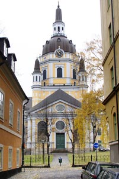
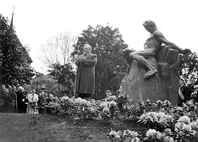
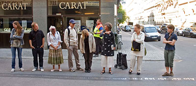
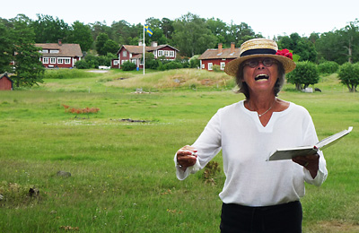
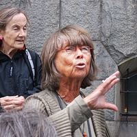

Vandringar eller föreläsningar – specialkomponerade eller enligt programmet nedan kan beställas av alla, exempelvis av konstföreningar, som födelsedagspresent, till firmafesten, till släktträffen, till lärarmötet, till bostadsrättsföreningen, till gymnasieklassen. Ja, det finns en Strindbergsstund för alla och för alla tillfällen.
Att exempelvis tillsammans vandra genom den kända eller okända staden där författaren vandrat, där dikterna tillkommit, där dramat utspelar sig, ger nya perspektiv och berikar läsupplevelser och ”vardagsvandringar”.
Jag vet, då jag har vandrat med August Strindberg sedan 1981 varje vår, sommar, höst och till och med på vintern i snöyra.
År 2015 går vi följande programmerade vandringar oberoende av väder och vind. Deltagande i vandringar kostar 100 kronor (exkl resor).
Stadsvandringar
”Det var en afton i början av maj…”

Inledningen av succéromanen ”Röda Rummet” – ett målande panorama över en älskad stad – är det mest kända av förfat- tarens Södermalm. Men här möter också Bellman, Katarina kyrkogård och klangen från Vita Bergen.
”I ett gammalt hus vid Riddarholmen…”
Från författarens födelseplats på Riddarholmen till hans sista bostad ”Blå Tornet” Drottninggatan 85, där han avled 14 maj 1912. Här passeras minnen från bland annat barndomens sim kurs, och ungdom samt mötes vänner och krogliv .
”Jag är icke; blott vad jag gjort, det är…”

En vandring som följer författarens sista färd 19 maj 1912 från hans sista bostad Drottninggatan 85 till graven på Norra kyrkogården ”icke i de rikas kvarter på fåfängans marknad” och passerar första hustruns grav. En vandring i försoningsdramat Stora Landsvägens texter.
”Här… erbjuds det vackraste Stockholm har att visa…”
Kungsträdgården – med utsikt mot Söder och omgiven av ett kulturliv med restauranger, teatrar och därtill bostäder – gav upphov till många avgörande händelser och möten i författarens liv.
”Det var på Drottninggatan En brinnande junidag…”

Vandringen följer Drottninggatan och gör nedslag i författarens civilisations- och samhällskritik, möter kärlek och brinnande historieintresse och funderar kring bildning och religion.
”… vi råkas på något sätt, i Hvita Huset vid Nybroplan…”
Stockholm var under författarens tid en mycket teatertät stad, där hans verk hade både jublande framgångar och kaotiska motgångar. Här presenterades också den intima scenen samtidigt som filmen tog sina första stapplande steg.
”En sal på Stockholms slott”
I Gamla stan övade författaren skrivandets konst, idgade umgänge med böcker och här utspelas ungdomsverk. Börshuset påminner både om Akademi och Aktier och Storkyrkans torn inbjuder till undersökning.
”Morgonen har något med sig som ger ungdom i sinnet”
Vi vandrar Strindbergs morgonpromenad – möter människor på Drottninggatans ”trottoar”, viker av ”i Fredsgatans halvdunkel” och passerar begravningspräst och ”löpgraven” Arsenalsgatan fram till ”en nationell bildningsanstalt” och ”Stockholms ungkarlsklubb”.
”…härd för myggor och spindlar”
Djurgården är fylld av platser från författarens liv och verk. Tidvis förlades boende, morgonpromenader och arbetsgömmen hit. Skådeplats för författarens kulturhistoriska gärningar och ”introduktion” i krogarnas nöjesliv.
”Här rivs för att få luft och ljus”
Östermalm beboddes av författaren många gånger. Här inträffade dramatiska händelser både i hans verk och liv. Här skapades bland annat ”Ett drömspel”, genomlevdes äktenskapet med Harriet Bosse och blommade Beethoven-febern.
Utflykter
”O, du min grönskande ö, blomkorg i havets våg”

Strindbergs sinnebild för skärgården kan välgrundat anses vara Kymmendö, Hemsö. Hit flydde han i fadersuppror för att skriva och odla och för att njuta av samvaron med sin första familj och vänner. Vandringen över ön går i ”Hemsöborna”s texter och hus i författarens liv.
”Detta var hans landskap… fattiga knaggliga gråstensholmar med granskog…”
Författaren besökte Dalarö många somrar för att hyra i familj, bo på hotell, vara på genomresa eller för proviantering. Här börjar ”Hemsöborna”, sker mötet med sommarprästen, flyddes kärleken, uppvaktades kvinnor samt målades i olja.
”…allt under det jag rustar till en dikt om Silfverträsket…”
Strindberg återkom för några år 1889 till Sverige och tillbringade tre somrar på Runmarö. Vistelserna präglades av skilsmässan från första hustrun och oron för barnen men också av experiment, fantasifulla teorier och arbetslust.
”…en vacker lövstrand med bryggor… små italienska villor”
Furusund blev Strindbergs sista skärgårdsglädje, som satte många avtryck i hans litteratur. Här möter den legendariske skaparen av Furusund, samlaren Christian Hammer. Från glödande optimism till djupaste vemod sommarlevde Strindberg här i hyrda rum eller hus – ensam eller med familj, släkt och vänner.
Om Anita Persson
Jag, Anita Persson, var, efter många års aktiviteter i Strindbergssällskapet, intendent på Strindbergsmuseet fram till 1994. Därefter är jag vida anlitad föreläsare/kåsör, vandrare och även skribent.

Jag är pedagog och "folkbildare" och anser att författare och deras texter inte enbart är till för att njutas av utan också för att användas i våra dagliga liv i med- som motgångar, för att fylla på tankar, fantasier och möjligheter – som energi – som kunskap – som erfarenhet.
Jag har också bland annat:
föreläst på Grafiska sällskapet och i Nacka konstförening
föreläst på Nobelmuseet om Strindberg och Svenska Akademien i samarbete med Iréne Lindh samt i samma ämne skrivit artikel till NEs nyhetssida
föreläst om Strindberg och Albert Engström i Grisslehamn i Engströms ateljé
föreläst på TV i anslutning till kollationeringen inför inspelningen av Peter Birros TV-film om den unge Strindberg
mottagit DN På Stans ”känga” 1987
varit samtalspartner och medverkande i inspelningarna av TVs program om personen Strindberg och Strindberg idag
varit med och startat Strindbergssällskapets årsbok Strindbergiana och ingick 1985–1992 i dess redaktion
varit redaktör och initiativtagare till antologin ”Ja, må han leva – 22 kvinnor från 11 länder skriver om Strindberg”
besökt flera bibliotek, studieförbund, andra sammanslutningar och organisationer för att presentera boken, som även anmälts på Bok- och Biblioteksmässan i Göteborg
planerat och deltagit i Dramatens poesihörna i samarbete med skådespelerskan Iréne Lindh, med bl a Strindberg och Ibsen, Strindberg och försvarsfrågan, Strindberg och kungamakt, Strindbergs Stockholm, Strindberg och Svenska Akademien, Strindberg och Linné, Strindberg och Intima Teatern, Strindberg och fredsfrågan, Strindberg och Dramatiska Teatern
stadsvandrat med åtskilliga gymnasie- och vuxenskoleelever
stadsvandrat och skärgårdsvandrat med fackliga organisationer, universitetsgrupper även från andra delar av Europa
stadsvandrat med presumtiva teaterbesökare från Dramaten till Strindbergs Intima Teater
lett flera studiecirklar – om enskilda böcker samt om Strindbergs tid och samhälle
skrivit boken ”Vandra med Strindberg” – 12 vandringar i Stockholm och Stockholms skärgård samt i Strindbergs litteratur.
presenterat August för invandrargrupper under titeln ”Varför talar man så mycket om August Strindberg?”
återkommande kåserat för blivande läkare på Karolinska Sjukhuset
väglett kanadensisk, svensk och engelsk TV i Strindbergs miljöer
”vandrat” i radioprogrammet ”Boktornet” i P1 tillsammans med skådespelaren Reine Brynolfsson
planerat och genomfört Strindbergdagar och –kvällar för personal på mindre och större företag
lunch- och middagsvandrat med födelsedagsbarn och deras gäster på väg till födelsedagsfesten
stadsvandrat med väninnor för att stimulera smaklökarna inför lyxmiddag
återkommande kåserat i Tegnérlunden för ”gammal” studentgrupp, som årligen har sillsexa i skuggan av Strindbergmonumentet
guidat utflykter till Kymmendö med studenter från hela världen i samarbete med Svenska Institutet
föreläst för studenter på Universitetet i Sofia, Bulgarien, om bla Strindberg och Ibsen, Strindbergs liv samt deltagit vid lanseringen av ny översättning av Röda Rummet
föreläst på Svenska Ambassaden i Tokyo, Japan
skrivit artiklar om bl a Strindberg och hans Stockholm i utländska skrifter
skrivit recensioner
fått ABF-Stockholms kulturpris
planerat och deltagit i nio torsdagar i P4 under rubriken ”Strindbergs Stockholm”
i anslutning till uppsättningen av Ett drömspel föreläst i Örebro, dels för inblandade på teatern vid kollationeringen och dels för presumtiv publik, samt skrivit bidrag i programmet
planerat och deltagit i TVs program om Strindbergs liv och Strindberg i världen idag
 Furusund blev Strindbergs sista skärgårdsglädje, som satte
många avtryck i hans litteratur. Här möter den legendariske skaparen av Furusund, samlaren Christian Hammer. Från glödande optimism till djupaste vemod sommarlevde
Strindberg här i hyrda rum eller hus – ensam eller med familj, släkt och vänner.
Furusund blev Strindbergs sista skärgårdsglädje, som satte
många avtryck i hans litteratur. Här möter den legendariske skaparen av Furusund, samlaren Christian Hammer. Från glödande optimism till djupaste vemod sommarlevde
Strindberg här i hyrda rum eller hus – ensam eller med familj, släkt och vänner.